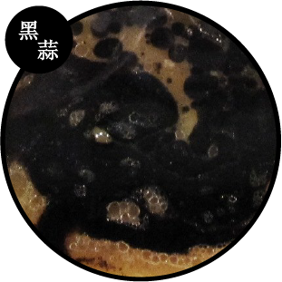
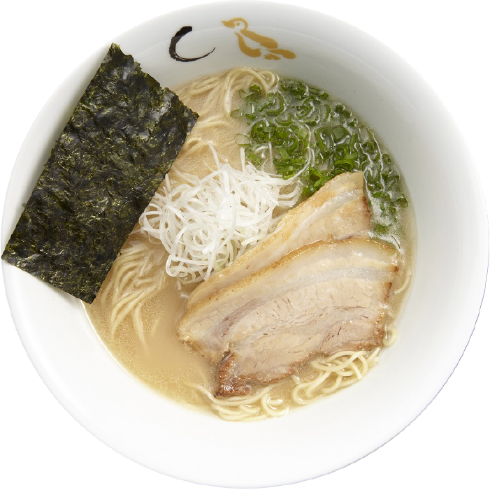

杜蘭小麥的蛋白質含量比一般麵粉高，由杜蘭小麥磨製的麵粉顆粒要比普通麵粉粗。此外杜蘭小麥麵粉含較多的黃色素，如芸香素約是一般小麥的2~3倍，所以杜蘭小麥麵粉的外觀呈金黃色澤。
杜蘭小麥製麵
杜蘭小麥製麵，比一般日本拉麵更有麥香，麵體細長、口感硬Q，搭配濃郁湯頭不顯油膩，細麵含水量較少，易吸附湯汁及香氣，更能凸顯豚骨湯頭的濃郁厚實。
杜蘭小麥製麵，比一般日本拉麵更有麥香，麵體細長、口感硬Q，搭配濃郁湯頭不顯油膩，細麵含水量較少，易吸附湯汁及香氣，更能凸顯豚骨湯頭的濃郁厚實。
台灣黑豬叉燒
採用台灣在地優良黑豬，飼料中添加益生菌及酵素，使肉質粗、脂肪霜降度提高；瘦肉部分有嚼勁，肉質滑嫩但不會失去韌性，而肥肉部分經過咀嚼就會融化。
選用優質豬五花肉，人工逐片檢查，去除過肥過瘦的部份，用綿繩將整片叉燒綁成一捲，使五花肉在滷製過程中保持緊實，再經川燙及滷製切成片狀。某些限定拉麵的叉燒還要經過乾煎及火烤的過程才能出餐。
採用台灣在地優良黑豬，飼料中添加益生菌及酵素，使肉質粗、脂肪霜降度提高；瘦肉部分有嚼勁，肉質滑嫩但不會失去韌性，而肥肉部分經過咀嚼就會融化。
